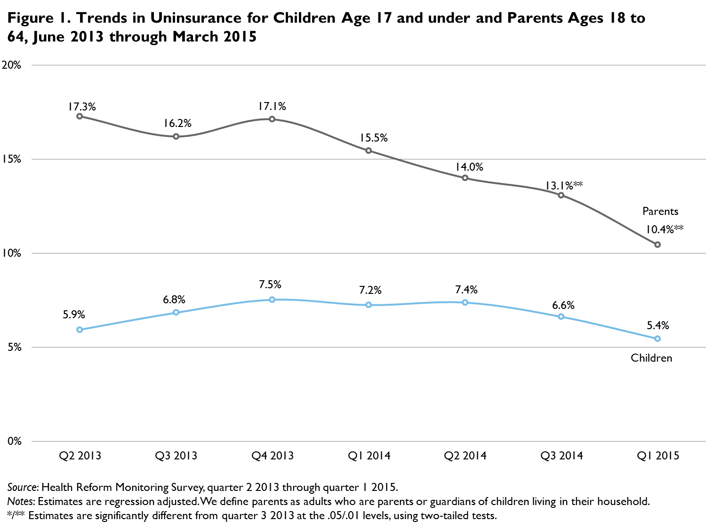

QuickTake: The Gap in Uninsurance Rates for Parents and Children Narrowed between September 2013 and March 2015
Michael Karpman, Genevieve M. Kenney, Nathaniel Anderson, and Sharon K. LongSeptember 8, 2015
The Urban Institute has been using the Health Reform Monitoring Survey (HRMS) to examine trends in health insurance coverage for nonelderly adults (ages 18 to 64) and their families under the Affordable Care Act (ACA) since the first quarter of 2013 (Long et al. 2014). The ACA includes many policy changes targeted at reducing uninsurance among nonelderly adults, including parents living with their dependent children. Though the ACA’s coverage expansions primarily targeted adults, several provisions of the law were expected to increase coverage for children, particularly through Medicaid and the Children’s Health Insurance Program, and the extension of coverage to parents was expected to have spillover effects on their children’s coverage (Kenney et al. 2011).
Analyses based on earlier HRMS data found that the uninsurance rate for parents fell 20.0 percent between September 2013 and September 2014 (Karpman et al. 2015), but there had been no statistically significant change in coverage for children during that period (Anderson et al. 2015). This QuickTake provides an update of those analyses, assessing coverage changes for parents and children between September 2013, before the first ACA open enrollment period, and March 2015, just after the second open enrollment period ended. We examine changes in uninsurance for the overall population of parents and children, by family income, and by race/ethnicity. We provide a 95 percent confidence interval (CI) for key estimates.
We find that the uninsurance rate for parents fell 5.8 percentage points (95% CI [4.0, 7.6]) from 16.2 percent in September 2013 to 10.4 percent in March 2015 (figure 1), a decline of 35.6 percent. The trend of declining uninsurance among parents that we found in our earlier analysis continued during the ACA’s second open enrollment period. In contrast, we found no statistically significant change in the uninsurance rate for children. Consequently, the gap in the uninsurance rates for parents and children fell from 9.4 percentage points in September 2013 to 5.0 percentage points in March 2015. Overall, parents were nearly twice as likely as children to be uninsured in March 2015, and low-income parents (those with family incomes at or below 138 percent of the federal poverty level [FPL]) were three times as likely to be uninsured as children in that income range (23.1 percent versus 7.8 percent; data not shown).  Particularly large percentage-point declines were found in the uninsurance rates for low-income parents and Hispanic parents, groups that have historically had higher rates of uninsurance (figure 2). Between September 2013 and March 2015, the share of parents without insurance decreased 14.2 percentage points (95% CI [8.9, 19.5]) among those targeted by the ACA’s Medicaid expansion (i.e., those with incomes at or below 138 percent of FPL) and 3.8 percentage points (95% CI [1.4, 6.3]) among those targeted by the new subsidies for Marketplace coverage (i.e., those with incomes between 139 and 399 percent of FPL). These percentage-point changes represented declines in uninsurance of 38.1 percent and 36.6 percent, respectively. As shown in figure 2, all of the estimated reductions in uninsurance (i.e., increases in coverage) among parents occurred within these low- and moderate-income groups, with no significant change for parents with income at or above 400 percent of FPL. Despite these reductions in uninsurance among parents with low and moderate incomes, 23.1 percent and 6.7 percent of those parents, respectively, lacked coverage in March 2015; 1.8 percent of higher-income parents lacked coverage in March 2015 (data not shown).
Significant reductions in uninsurance were also found for parents in the three racial/ethnic groups examined: Hispanic parents, nonwhite non-Hispanic parents, and white non-Hispanic parents experienced decreases in uninsurance of 11.7 percentage points (95% CI [7.7, 15.7]), 6.1 percentage points (95% CI [2.1, 10.1]), and 3.6 percentage points (95% CI [1.4, 5.8]), respectively. These percentage-point changes represented declines in uninsurance of 31.0 percent for Hispanic parents, 46.0 percent for nonwhite, non-Hispanic parents, and 37.9 percent for white, non-Hispanic parents. Though Hispanic parents saw a large percentage-point reduction in uninsurance, they still had an uninsurance rate of 26.1 percent as of March 2015 (data not shown).
Consistent with the relative stability of uninsurance between September 2013 and March 2015 for children overall, no statistically significant changes in uninsurance were found for children in any of the income or racial/ethnic categories examined.
Our findings of a substantial decrease in uninsurance among parents between September 2013 and March 2015, with no statistically significant change in uninsurance for children,1 indicate a reversal of the pattern found in the years leading up to the implementation of the ACA’s coverage provisions. During that period, uninsurance rates had been increasing among parents but falling for children (Rosenbaum and Kenney 2014). These changes suggest meaningful improvements in coverage for parents that are likely driven in part by Medicaid expansion and new subsidies for coverage under the ACA. The 5.4 percent uninsurance rate for children found by the March 2015 HRMS is consistent with the low uninsurance rate that had been achieved for children before the ACA’s major coverage provisions were implemented. Because of the narrowing of the insurance gap between children and parents, parents were about twice as likely to be uninsured as children in March 2015; before the ACA, they had been three times as likely as children to be uninsured (Rosenbaum and Kenney 2014). In future work, we will assess what is driving the observed coverage increases for parents, focusing on the role played by the Medicaid expansion and whether coverage changes are leading to greater access to and affordability of health care for families. We will also examine the remaining uninsured and explore policies that could lead to further reductions in uninsurance among both parents and children.
Methods: For this analysis, we used HRMS data from quarters 2—4 2013, quarters 1—3 2014, and quarter 1 2015 to examine changes in coverage for parents ages 18 to 64 and children from birth to age 17. In each round of the HRMS, approximately 7,500 adults ages 18 to 64 complete the survey. The child supplement (HRMS-Kids) was added to the HRMS in quarter 2 2013 to ask questions about a randomly selected child in respondents’ households, if the household included children. HRMS-Kids yields information on approximately 2,400 randomly selected children each round. Our definition of parents, which is based on information provided in the HRMS-Kids, includes all parents and guardians living with a dependent child age 17 or under.
Each round of the HRMS and HRMS-Kids is weighted to be nationally representative. We use these weights and regression adjustment to control for differences in the demographic and socioeconomic characteristics of the respondents across the different rounds of the survey.2 This allows us to remove any variation in insurance coverage caused by changes in the types of people responding to the survey over time rather than by changes in the health insurance landscape. The basic patterns shown for the regression-adjusted measures are similar to those based solely on simple weighted estimates. In presenting the regression-adjusted estimates, we use the predicted rate of uninsurance in each quarter for the same nationally representative population. For this analysis, we base the nationally representative sample on survey respondents from the most recent four quarters of the HRMS that included the HRMS-Kids (quarters 1—3 2014 and quarter 1 2015). We focus on statistically significant changes in insurance coverage over time (defined as differences that are significantly different from zero at the 5 percent level or lower) and highlight changes relative to September 2013, just before the open enrollment period for the Marketplaces began. We provide a 95 percent confidence interval for key estimates. In some rounds of the survey, the interview month starts a few days before or lasts a few days after the target month.
Limitations to the analysis: The HRMS and HRMS-Kids are designed to provide early feedback on ACA implementation to complement the more robust assessments that will be possible as more federal survey data become available. Though HRMS estimates capture the changes in insurance coverage under the first and second open enrollment period of the ACA, the estimates understate the full effects of the ACA because the estimates do not reflect the effects of some important ACA provisions (such as the ability to keep dependents on health plans until age 26, early state Medicaid expansions, and the maintenance of eligibility for children) that were implemented before 2013. In addition, these estimates will reflect changes beyond the effects of the ACA because they do not control for long-term trends in health insurance coverage that predate the ACA or control for changes in the business cycle. Further, the HRMS-Kids sample is substantially smaller than the full HRMS sample of nonelderly adults. Consequently, there is less precision associated with the estimated uninsurance rate for children, especially relative to the low uninsurance rate for children at baseline.
References
Anderson, Nathaniel, Genevieve M. Kenney, Michael Karpman, Douglas Wissoker, Sharon K. Long, and Stacey McMorrow. 2015. QuickTake: Health Insurance Holds Steady among Children through September 2014. Washington DC: Urban Institute.
Cohen, Robin A., and Michael E. Martinez. 2015. Health Insurance Coverage: Early Release of Estimates from the National Health Interview Survey, January-March 2015. Hyattsville, MD: National Center for Health Statistics.
Karpman, Michael, Genevieve M. Kenney, Sharon K. Long, and Nathaniel Anderson. 2015. QuickTake: Health Insurance Coverage for Parents under the ACA as of September 2014. Washington DC: Urban Institute.
Kenney, Genevieve M., Matthew Buettgens, Jocelyn Guyer, and Martha Heberlein. 2011. “Improving Coverage for Children under Health Reform Will Require Maintaining Current Eligibility Standards for Medicaid and CHIP.” Health Affairs 30 (12): 2371—81.
Long, Sharon K., Genevieve M. Kenney, Stephen Zuckerman, Dana E. Goin, Douglas Wissoker, Fredric Blavin, Linda J. Blumberg, Lisa Clemans-Cope, John Holahan, and Katherine Hempstead. 2014. “The Health Reform Monitoring Survey: Addressing Data Gaps to Provide Timely Insights into the Affordable Care Act.” Health Affairs 33 (1): 161—67.
Rosenbaum, Sara, and Genevieve M. Kenney. 2014. “The Search for a National Child Health Coverage Policy.” Health Affairs 33 (12): 2125—35.
About the Series
For more information on the HRMS and for other QuickTakes in this series, visit www.urban.org/hrms.
Note 1 According to National Health Interview Survey data, there was a statistically significant decline in the uninsurance rate for children between 2013 and the first quarter of 2015, from 6.5 to 4.6 percent (Cohen and Martinez 2015). 2 We control for the variables used in poststratification of both the KnowledgePanel (the nationally representative Internet panel maintained by GfK Custom Research from which HRMS samples are drawn) and the HRMS, including sex, age, race/ethnicity, language, education, marital status, presence of children in the household, household income, family income, homeownership status, Internet access, urban/rural status, and region. We also control for citizenship status and participation in the previous quarter’s survey. |

 |
 |
 |